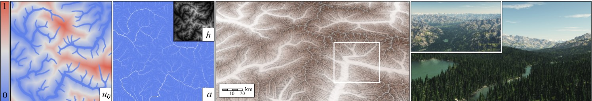

Axel Paris - Research Scientist
Home
Publications
Resume
Email
Twitter
Large-scale terrain authoring through interactive erosion simulation
July 27, 2023.

Preprint
PDF
Video
Code
Large-scale terrains are essential in the definition of virtual worlds. Given the diversity of
landforms and the geomorphological complexity, there is a need for authoring techniques offering
hydrological consistency without sacrificing user control. In this article, we bridge the gap
between large-scale erosion simulation and authoring into an efficient framework. We set aside
modeling in the elevation domain in favour of the uplift domain and compute emerging reliefs by
simulating the stream power erosion. Our simulation relies on a fast yet accurate approximation
of drainage area and flow routing to compute the erosion interactively, which allows for incremental
authoring. Our model provides landscape artists with tools for shaping mountain ranges and valleys,
such as copy-and-paste operations; warping for imitating folds and faults; and point and curve elevation
constraints to precisely sculpt ridges or carve river networks. It also lends itself to inverse procedural
modeling by reconstructing the uplift from an input digital elevation model and allows hydrologically
consistent blending between terrain patches.
@article{Schott2023,
author = {Schott, Hugo and Paris, Axel and Fournier, Lucie and Gu\'{e}rin, Eric and Galin, Eric},
title = {Large-Scale Terrain Authoring through Interactive Erosion Simulation},
year = {2023},
volume = {42},
number = {5},
journal = {ACM Trans. Graph.},
numpages = {15}
}